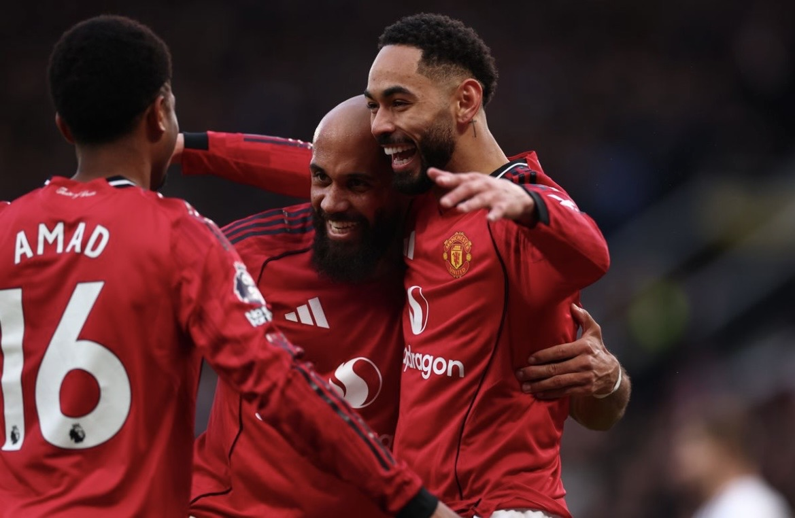

Transfer expert Fabrizio Romano has revealed a seismic summer ahead for [Manchester United], with multiple high-profile departures now confirmed. Romano’s latest update highlights a potential £312.9m exodus as several big-money stars prepare to leave the club.
According to Romano, at least five big-name players are now likely to exit Old Trafford when the season ends. Among them are star names like Casemiro and Jadon Sancho, who will leave on free transfers. Other players, including goalkeeper Andre Onana and striker Rasmus Højlund, are expected to depart on permanent deals as part of Manchester United’s squad overhaul.
The latest addition to the list is Uruguayan midfielder Manuel Ugarte, who is reportedly evaluating his future with interest from clubs in Italy and elsewhere. Romano reports that there’s “movement” among interested parties as Ugarte considers his next destination.
United’s summer planning now appears focused on reinvesting this sizeable transfer fund into midfield reinforcements. Target names reportedly include promising talents like Carlos Baleba, Adam Wharton and Elliot Anderson, with the club said to be monitoring developments closely.
This strategic reset reflects a broader tactical shift, as the club prepares for the next era under new ownership. Fans and pundits alike are watching to see which top players will bolster United’s squad next.
Romano’s reputation for accuracy means this update is being taken very seriously across football’s transfer community. With multiple departures likely and just weeks until the summer window, United’s summer could be one of the busiest transfer periods in recent history.